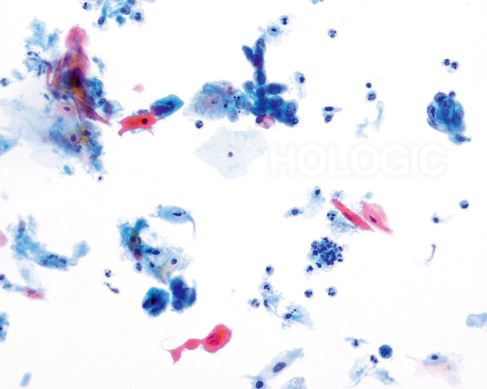
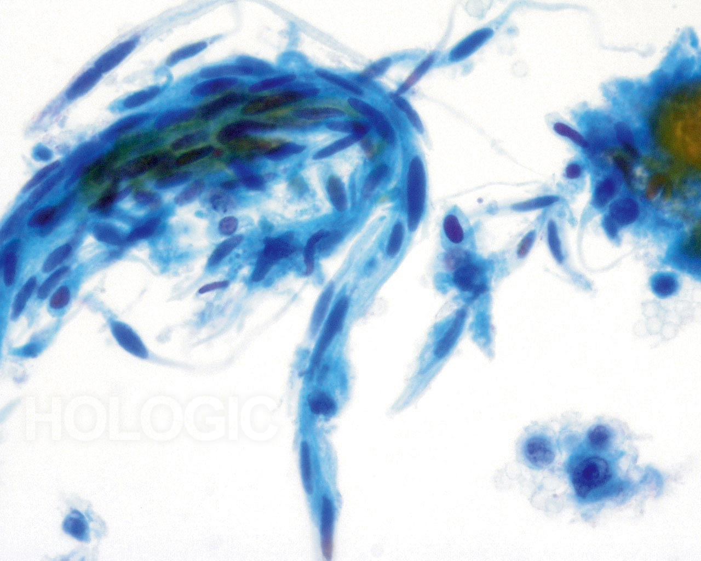
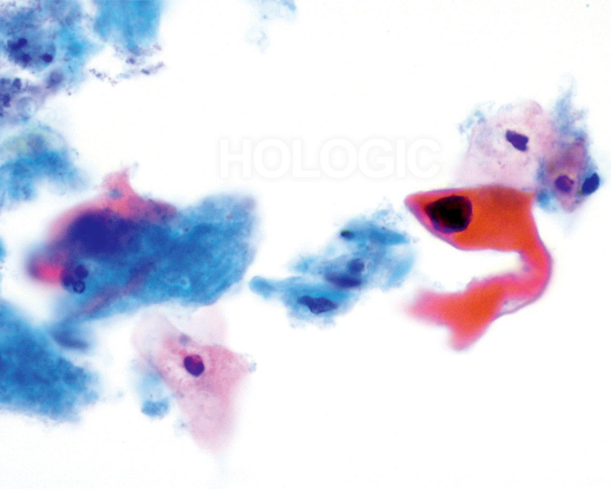
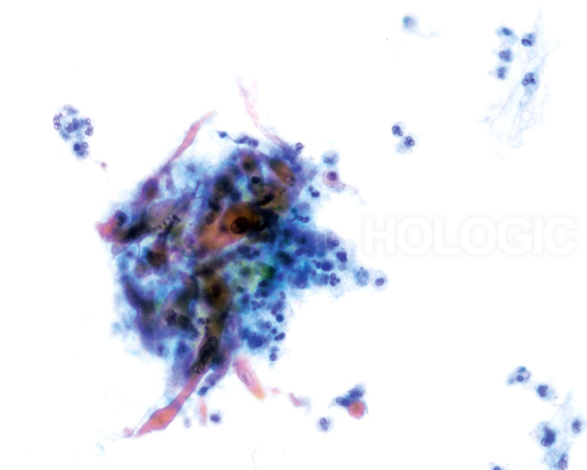
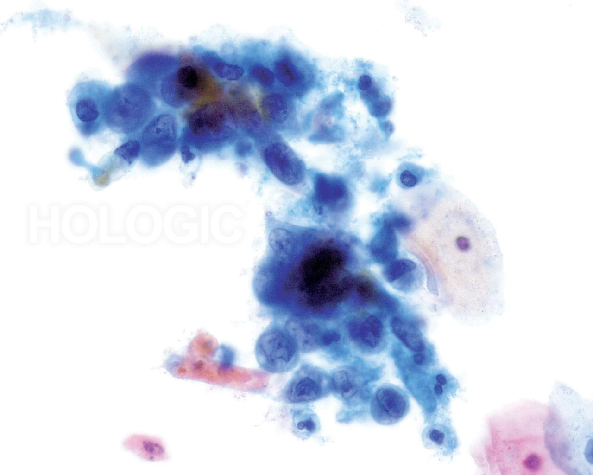
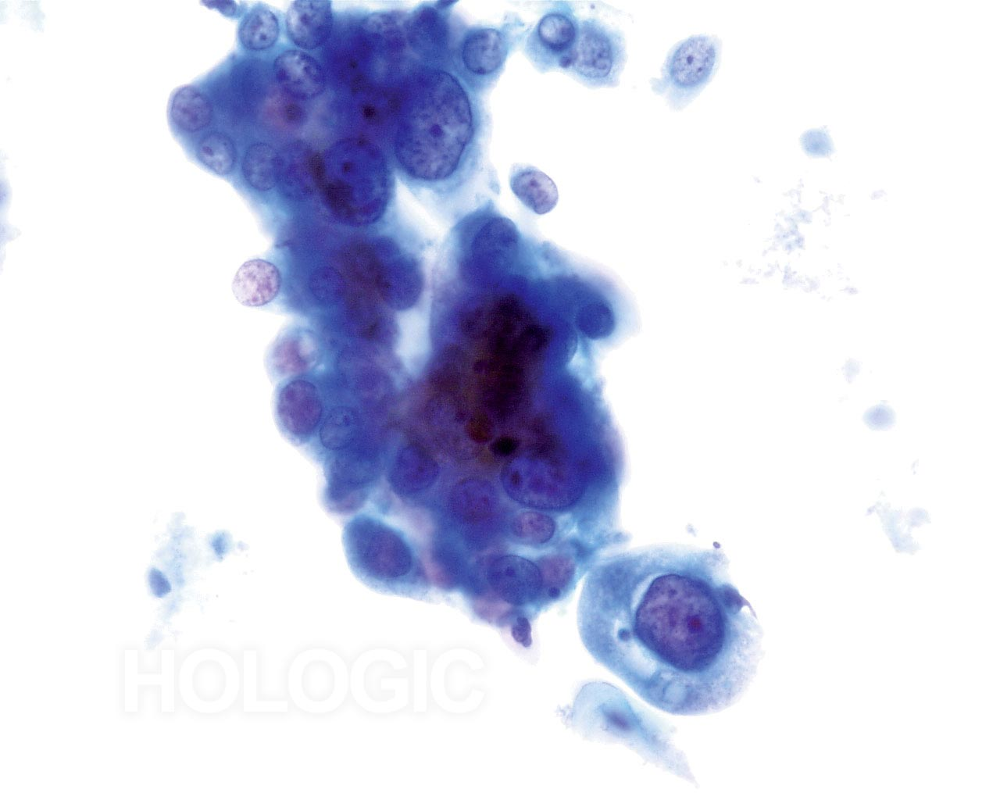
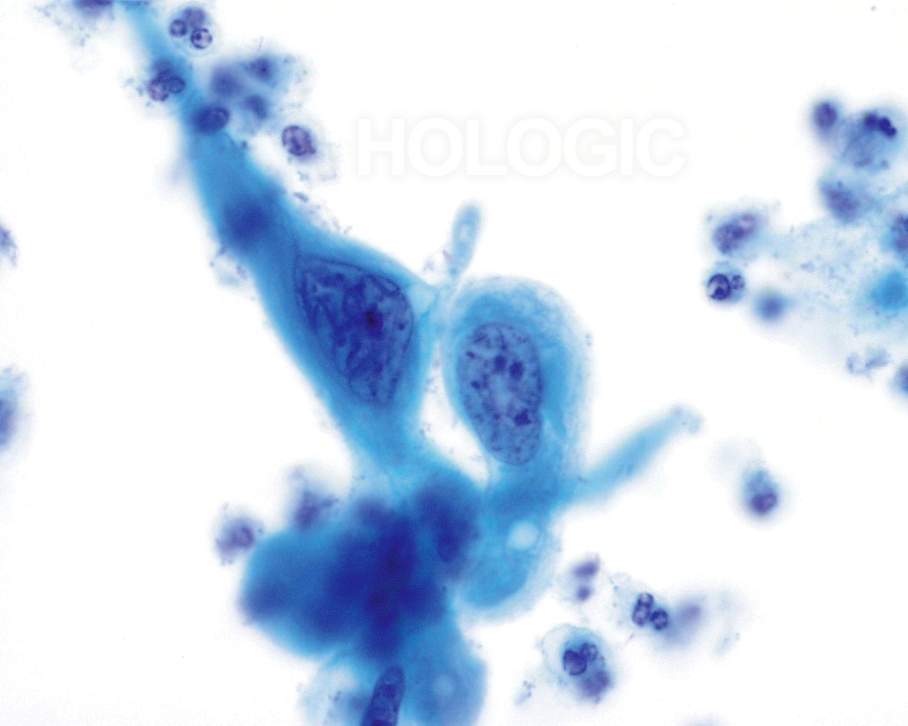
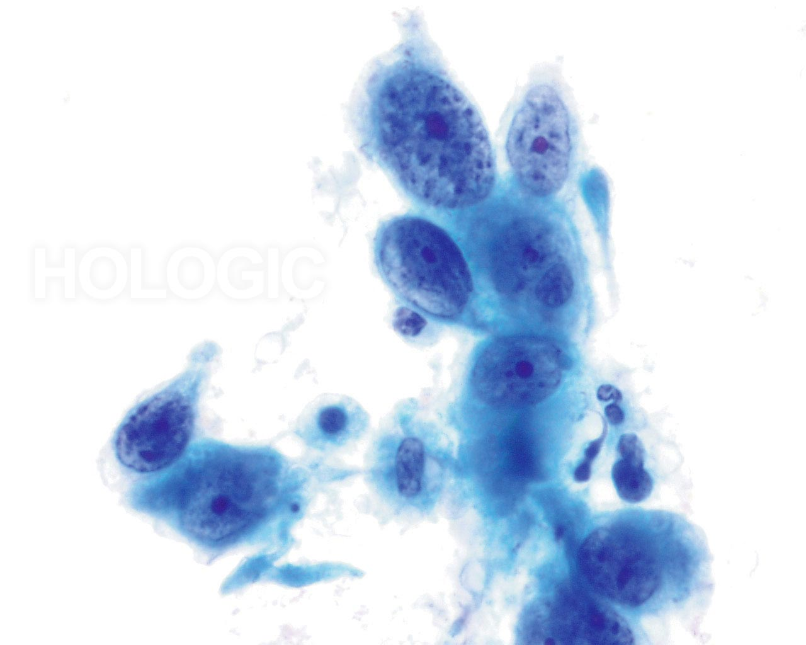
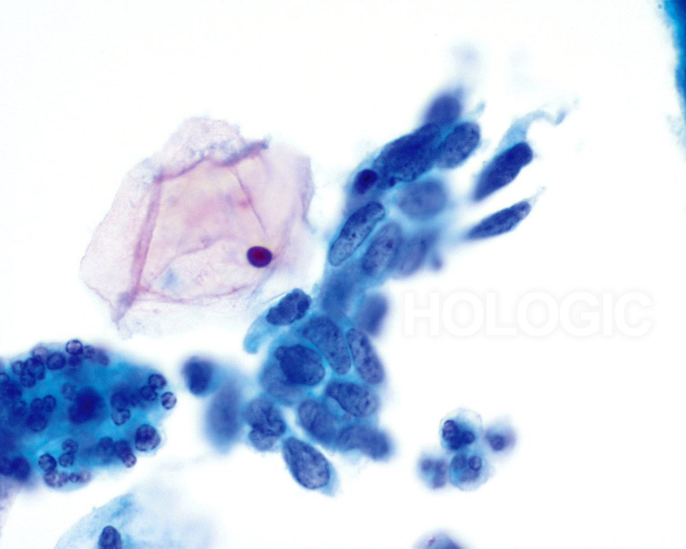
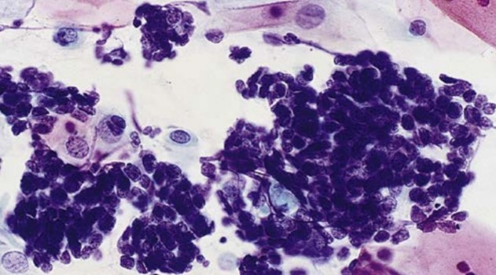

Squamous Cell Carcinoma
Overview
- Neoplasia means new growth and a new growth is a neoplasm
- Neoplasia is often preceded and associated with metaplasia and dysplasia
- Metaplasia is the replacement of one cell type with another
- Associated with damage, regeneration, and repair
- Metaplasia may or may not proceed to dysplasia
- Dysplasia or abnormal growth is common in epithelial cells
- Preinvasive neoplasm when basement membrane remains intact
- Carcinoma in situ does not occur in all tissue
- Common in cervix, skin, and breast
- Does not have to proceed to invasive carcinoma and may regress
- Invasion occurs when cells can and do penetrate through the basement membrane
- Dysplasia/SIL often found alongside invasive tissue
- Histologically malignant neoplasms (tumor) have two main components:
- Parenchyma (tissue) is comprised of the neoplastic cells
- Serves to classify and determine biologic behavior of tumor (glandular, squamous, neuroendocrine)
- Reactive stroma is connective tissue, blood vessels and the immune system
- Critical to tumor proliferation and spread
- Morphologically, cells of all malignant neoplastic processes resemble each other
- There are common features of malignancy with some variability
- Resemblance is regardless of site of origin
- Squamous carcinomas, adenocarcinomas, and other cancer types will have similar patterns
- Many, not all, malignant neoplasms are aberrations of normal tissue
- Neoplasms are morphological and behavioral alterations from original tissue
- However, neoplasms exhibit a wide range of differentiation
- Differentiation is how closely neoplastic tissue looks like normal “mother” tissue
- Well-differentiated neoplasms: subtle differences between normal tissue/benign neoplasms
- Retains most normal morphology features and function
- Ex. Benign endocrine tumors and well-differentiated carcinomas secrete hormones
- Referred to as functioning tumors when secrete a substance/product
- Moderately-differentiated neoplasms: some similarities to original tissue and function
- Poorly-differentiated: referred to as anaplastic
- No differentiation of tissue or function
- Most anaplastic malignant neoplasms have common malignant features
- Pleomorphism: variation in shape and size
- Cells are not uniform
- Range in size from small, basaloid cells to large giant cell forms
- Abnormal Nuclear Morphology:
- Increase in N:C ratio, larger than normal cells
- Irregular nuclear shape
- Coarse uneven to evenly clumped chromatin
- Chromatin thickened along nuclear membrane
- Increase in hyperchromasia (variable)
- Mitotic Figures: observed more than in normal tissue/benign neoplasms
- Not a strong indicator of malignancy
- Indicative of high proliferative activity (could be benign or malignant cells)
- Eg. Cells from gut normally have a high rate of mitosis
- Abnormal mitosis is a feature of malignancy
- Observed tripolar to multi-polar spindles, bizarre and atypical
- Loss of Polarity:
- Cells are disorganized in a haphazard arrangement
- Less so for well-differentiated and moderately differentiated which maintain some semblance of original tissue
- Ischemic Necrosis
- Tumors need large blood supply, which is often not provided, causing ischemic necrosis
- More evident in anaplastic tumors with rapid growth
- Most malignant cells exhibit rapid cell growth, invasion, and destruction
- Destroys architecture, loss of cell adhesion
- Leads to increased number of cells
- Increased cell numbers help facilitate diagnosis
- Cytology interpretation dependent on:
- Location of lesion
- Type of lesion
- Degree of obscuring inflammatory response
- Sampling method
- Configuration of organ
- Cytotech / Pathologist’s ability
- Patient’s status
- Age and size of the lesion
- Never use one criteria alone for diagnosing malignancy, aim for 4-5
- Most important criteria for malignancy
- Nucleus tells the biological potential, and cytoplasm tells the cell’s origin
- Nuclear hypertrophy
- Many malignant cells have enlarged nuclei
- High N:C ratios are a good sign of malignancy
- Always compare cell of concern to normal cell of the same tissue type, when possible
- Most malignant nuclei are greater than 10um (use a healthy neutrophil as guide
- Remember that infectious agents, radiation, and other factors can enlarge nuclei
- Degenerated nuclei should not be malignant
- Nuclear shape
- Normal are typically round to oval
- Malignant nuclei can take on protrusions and irregular membranes
- Look-alikes: degeneration, poor fixation, and hormones can cause nuclear variation
- Hyperchomasia
- Increase can be good clue but not reliable
- Not all malignant cells are hyperchromatic
- Chromatin irregularity
- Very important criteria
- Normal cells usually have finely granular chromatin
- In malignancy, chromatin becomes clumped, irregular, and angulated
- In degeneration, chromatin is fuzzy, not sharp
- Parachromatin clearing
- Multi-nucleation
- Not strong clue, but more definitive if pleomorphic
- Nuclear membrane
- Indentations, wrinkling, and protrusions are a good sign of malignancy
- Nucleoli
- If larger than 5um, probably malignant
- Prominent nucleoli are found in certain benign cells and reactive conditions
- Tells the cell origin (type of malignancy)
- Amount of cytoplasm
- Important for identifying tumor type
- Amount varies with tumor type
- Always compare size to normal cells
- Shape of cytoplasm
- Not reliable criteria but helpful
- Other factors that impact cytoplasm are sampling technique, environment, and cell pressure
- Cytoplasmic borders may be distinct (squamous carcinomas) or fuzzy (adenocarcinomas)
- Molding/touching of nuclear and cytoplasmic membranes
- Occurring in more than one point is good criteria for malignancy
- Presence of blood
- Alone, not a good clue
- Certain cellular elements are clues, but not definite (ex. Psammoma bodies)
- Tumor diathesis
- Important clue to presence of malignant cells
- Granular proteinaceous material admixed with blood (intact and broken RBCs) and WBC
- Terms “ratty” and “dirty” are often used
- Tumor diathesis ranges from non to abundant and obscuring
- Growth signals: oncogene activation allows cells to grow without external stimulation
- Not sensitive to growth inhibitors: do not respond to molecules that regulate growth
- Inactivation of tumor repressor genes
- Alteration in cellular metabolism (Warburg effect)
- Apoptosis: programmed cell death is resisted
- Immortality: Limitless reproducibility, stem cell-like properties
- Angiogenesis: grows own blood vessels
- Invade and metastasize: Main cause of cancer death, the ability to control its environment
- Alterations: allow them to evade host defense
- Accounts for less than 1% of new cancer cases in the US
- Ranked 14th among cancer frequency in women worldwide
- Current low ranking attributed to Pap testing
- Pap test effective at preventing squamous cell carcinoma, not endocervical adenocarcinoma
- 5-30% of patients with endocervical adenocarcinoma test negative
- Pap test ineffective for all other cancers of FGT
- Rates of cervical cancer are highest among Hispanic women and lowest among Native Americans
- Peak age is 35-50 years old
- 5 year survival is 66%
- Symptoms: Asymptomatic or non-specific symptoms
- Abnormal bleeding is main clue
- Often post-coital bleeding
- Bleeding out of cycle or postmenopausal bleeding
- In late stages: pain, anemia, weight loss, bowel and bladder obstruction may occur
- Colposcopy examination may reveal:
- Atypical non-branching blood vessels
- Ulceration or raised irregular surface
- Firmness on palpitation
- Yellow-colored epithelium
- Gross features and histologic growth:
- Various growth patterns
- Exophytic: cauliflower-like growth outward, more towards ectocervical
- Endophytic: endocervical canal, red granular lesions
- Polypoid structure
- Papillary formation
- Flat
- Ulcerative
- Infiltrates as cords of cells into stroma
- Early invasion defined by FIGO maximum 5mm in depth and maximum 7mm in width
- Venous and lymphatic involvement present during invasion
- Patients under 30 years old develop cervical cancers that tend to be more aggressive
- Higher stage disease presentation usually has lymph node involvement
- Vascular invasion
- Distant metastasis
- Grading of tumor is not a good predictor of behavior
- WHO recognizes two main types:
- Keratinizing squamous cell carcinoma
- Non-keratinizing squamous cell carcinoma
- However, three main types are considered:
- Grade 1 Keratinizing squamous cell carcinoma- typically well differentiated
- Grade 2 Non-keratinizing squamous cell carcinoma- moderately differentiated
- Grade 3 Small cell squamous cell carcinoma- poorly differentiated
- All display immunohistochemical stains p63+, p40+, p16 strongly positive in HPV+ cases
- Single cells and loose aggregates
- Irregular membranes
- Pleomorphic nuclear and cytoplasmic features
- Chromatin irregularities include parachromatin clearing, coarseness, and irregular distribution
- Increased number of nucleoli with irregular shapes
- Tumor diathesis: host response to invasion
- Degenerated cells, debris, old blood, necrosis, sheets or patches of granular proteinaceous material
- May cling to cells “clinging diathesis”
- More clingy on LBP
- Less in metastatic lesions and exophytic carcinomas
- Look-alikes are trich background, abscess, ulcerated polyp, atrophy, coccoid bacteria
- Well to moderately differentiated tumor
- Most common type of squamous cell carcinoma (SCC) worldwide but 2nd most common in US
- Grossly appears as exophytic growth and/or wart-like lesions
- Histologically invades with finger-like projection with stromal reaction
- Forms nests and cords, intercellular bridges evident
- Easiest of the patterns to recognize
- Single cells and aggregates
- Mature squamous cells, spindle cells, and bizarre shapes
- Cells larger than from non-keratinizing SCC
- Keratinization evident by spindle cells, squamous pearls, and bizarre squamous cells
- Dense cytoplasm and distinct cell boundaries
- Comprised of intercellular keratin filament deposits
- Ecto-endoplasmic ringing: Formation of concentric rings, thick dense endoplasm and thin outer rim of ectoplasm
- Herxheimer’s spirals: Thin spirals more frequently evident in spindly cells
- Keratohyaline granules also evident
- Squamous pearls are 3D concentric rings of squamous cells with central core of keratin
- Hallmark of KSCC is orangeophilia associated with dense keratinization
- Not evident in all cases or only isolated cells
- Typical morphology:
- Pleomorphic cells with snake or tadpole formations evident
- Snake-like cells are spindly with central nucleus
- Tadpole has spherical head with nucleus and tail-like projections
- Cells may be spherical and polygonal
- Keratinized anucleated squamous with irregular outlines
- Nuclei are round, spindly or irregular
- Mono to multi-nucleated, 3 times larger than intermediate cell nucleus
- Irregular nuclear membrane with angulations
- Coarse and pyknotic chromatin
- Nucleoli and mitosis very rare
- Tumor diathesis variable, less than NKSCC and Small cell SCC
- Differential: Keratinizing dysplasia
- KSCC has increased number of cells, more bizarre features, nuclear irregularities and tumor diathesis
- The most common type of SCC in the US (60% cases)
- More endophytic (t-zone, endocervical canal) produce barrel shape to cervix
- May see referred to as large cell non-keratinized squamous carcinoma
- Histologic sheets, nests, cords or trabeculae (elephant trunk)
- Stroma has fibroblastic inflammatory reaction-predominately eosinophils and lymphocytes
- Cytologic single, medium to large cells (parabasal to intermediate)
- Syncytial aggregates hallmark of pattern
- Uniform shapes and sizes in comparison to KSCC
- Typical morphology:
- Nuclei are 2 to 3x normal intermediate cell nucleus
- Moderate N:C ratio
- Key-coarse, irregular clumped chromatin with prominent nucleoli
- Nucleoli may be multiple, and irregular
- Mitotic figures present
- Difficult pattern- naked malignant nuclei
- Dense, cyanophilic cytoplasm
- Background abundant tumor diathesis
- Differentials: repair and adenocarcinoma
- Form of non-keratinizing cell carcinoma
- Least common type
- Other types of small cell carcinomas are neuroendocrine in origin (stains will identify neurosecretory granules)
- Very rare, highly aggressive malignancy
- Develops rapidly may arise in year between Pap tests
- Arises in endocervical canal-presents as red granular lesion
- Hard to sample, cells don’t shed-scanty cells on cytology
- Cells are small, primitive, basaloid (germinal cell) type
- Challenging tumor, easily missed as look alike are endometrial cells, histiocytes etc.
- Typical morphology:
- Histologic growth pattern of small cells in sheets and nests
- Small cells with high N/C ratios and poorly defined borders
- Mitosis and necrosis
- Cytologically syncytial forms and HCGs, single cells
- Cells are relatively uniform, oval and spindle shape
- Nuclei are 1.5 to 2x normal intermediate cell nucleus, mitosis common
- Very high N:C ratio, presents as naked nuclei
- Smooth nuclear membranes makes it challenging to recognize as malignancy
- Coarse very dark chromatin
- Nucleoli are present but obscured by dark chromatin may see nuclei on LBP
- Abundant tumor diathesis
- Differentials: endometrial cells, follicular cervicitis, lymphoma, small cell neuroendocrine carcinoma (special stains required)
- Verrucous Carcinoma
- Well differentiated tumor
- Formerly called giant condyloma, associated with HPV 6
- Slow growing with no metastasis
- Invasion is hard to detect
- Koilocytosis may be evident
- More common on vulva
- Papillary wart-like structures
- Appears as low grade keratinizing dysplasia but with denser cytoplasm
- Condylomatous Carcinoma
- Infiltrates in same manner as SCC
- Associated with HPV 6, 11, 16, 18
- Pattern is a mixture of KSCC cells, papillary arrangements and koilocytes
- Papillary Squamous Cell Carcinoma
- Same as verrucous but with more abnormal features
- Basaloid, fiber and bizarre cells with abnormal nuclei
- No condylomatous changes
- Urothelial (Transitional) Cell Carcinoma
- Rare cervical tumor
- Cross between bladder tumor and papillary squamous carcinoma
- Bland to hyperchromatic nuclei with granular chromatin
- Elongated nuclear grooves
- Nucleoli are inconspicuous
- Lymphoepithelial-like Squamous Cell Carcinoma
- Very rare, similar to pattern in nasopharyngeal region
- More common in Asia and associated with Epstein-Barr Virus infections
- In US, associated with HPV 16 and 18
- Similar to NKSCC, but with large lymphoid infiltrate
- Differentials: Lymphoma and other anaplastic tumors
- Spindle Squamous Cells
- Also called sarcomatoid carcinoma
- Spindly, non-keratinized cells, anaplastic
- Numerous mitotic figures
- Rare to produce metastasis
- Depends on tumor stage (extent of spread), determined by biopsy and imaging
- Cone biopsy performed for stage IA tumors
- Radiation (brachytherapy) and surgery for stage IB to IIA tumors
- Simple or radical hysterectomy are surgical options
- Trachelectomy: removal of cervix with lymph node dissection
- Combined radiation and chemotherapy for advanced tumors
- Chemoradiation with cisplatin may be used for advanced disease
- Grading is the determination of differentiation of neoplasm
- Determined by nuclear features:
- Degree of anaplasia
- Mitotic figures
- Determined by pathologists on tissue; has some degree of subjectivity
- May be done cytologically in certain malignant types
- High grade neoplasms have greater risk for invasion and distant metastasis
- Histologic classification:
- GX: grade cannot be assessed
- G1: well differentiated, looks like normal cells and slow growing
- G2: moderately differentiated, does not resemble normal cells and growing rapidly
- G3: poorly differentiated, high degree of anaplasia with fast growth
- G4: undifferentiated, no differentiation and high growth rate
- Grade solely determined by pathology
- Staging determines the spread of the disease
- Defines prognosis and determines treatment
- Clinical staging: extent of disease before treatment
- Pathology staging: done in conjunction with surgical evaluation
- Staging can be performed after treatment and autopsy
- Grade and stage are integral to oncology practice
- Stage is determined by pathology and imaging techniques
- Several systems worldwide for classifying and reporting stage
- TNM classification most common
- T = size and extent of tumor
- Tx: tumor cannot be adequately assessed
- T0: no evidence of primary tumor
- Tis: Carcinoma in situ
- T1-4: increase in tumor size and involvement
- N = are regional lymph nodes involved
- NX: regional lymph nodes cannot be assessed
- N0: no regional lymph node metastasis
- N1-4: increasing degree of regional lymph node metastasis
- M = is there metastasis
- MX: minimum requirement to assess metastasis cannot be met
- M0: no evidence of distant metastasis
- M1: specify type of distant metastasis
- TNM classification used to determined FIGO stage of cervical cancer
- FIGO has 4 stages:
- Confined to uterus
- Invades beyond uterus but not pelvic wall and lower third of vagina
- Tumor extends to pelvic wall and involves lower third of vagina
- Causes hydronephrosis (non-functioning kidney)
- Invades bladder or rectum and extends beyond true pelvis
- Author. Title of article. Journal Name. Year;Volume(Issue):Pages.
- Author. Title of second article. Journal Name. Year;Volume(Issue):Pages.
Features of Malignancy
Morphology of Malignancy
Nuclear Changes
- Prominent, irregular with sharp projections, multiple
Cytoplasmic Changes
Background
Molecular Hallmarks of Malignancy
Cervical Carcinoma
Prevalence
Gross Features
Squamous Carcinoma
Types of Squamous Cell Carcinoma
Overall Features of Squamous Cell Carcinoma
Keratinizing Squamous Cell Carcinoma (KSCC)




Non-Keratinizing Squamous Cell Carcinoma (NKSCC)




Small Cell Squamous Cell Carcinoma (SCSCC)

